CDE4301: NUS FSAE EV Dyno | Final Report
Design and Development of the NUS FSAE Dynamometer
Phase 1 focuses on the structural frame, mounting flange, cooling layout, and validation of a compact hub-mounted dynamometer for the NUS Formula Society of Automotive Engineers Electric Vehicle (FSAE EV) team.
Abstract
Our project aims to design and develop a hub-mounted dynamometer (dyno) for the NUS FSAE EV team. A dyno measures the torque and power output of the car at different rotation speeds, providing quantitative data on the overall car performance under controlled conditions and simulate track conditions in future.
Our key constraints include our limited electrical engineering background, a $1600 budget, and limited workshop space. To address our limited knowledge of Electrical Engineering, we focused on the dynamometer’s structural frame, wheel-hub mount, and cooling system in phase 1 of the project, ensuring that the dyno is compact, cost-effective, and safe to run in the NUS FSAE workshop.
Additionally, we will use the EMRAX 228 motor (from the FSAE EV) as the dyno’s absorption motor, as it is readily available in the FSAE workshop and compact, aligning with our user needs and constraints to develop a cost-efficient, portable dyno.
Expected deliverables in Semester 1 include the complete CAD of a compact, safe, and modular dyno layout, demonstrating feasibility and layout considerations. This design will be sent for fabrication in Semester 2.
Expected deliverables in Semester 2 include an assembled and validated dyno prototype based on Sem 1 design, mounted to the FSAE EV wheel hub and supported by structural analysis and cooling system analysis as a proof of concept.
1. Introduction and Scope
NUS FSAE team designs and builds a formula-style Electric Vehicle (EV) to compete in both local and international races. Currently, the team tests components such as the motor, battery, drivetrain, and transmission independently or conducts on-track tests near competition. However, the current method is unable to quantitatively evaluate the car’s overall performance and obtain data such as torque and power output across various rotational speeds, as well as drivetrain efficiency under controlled conditions. This limits the team’s ability to optimise its performance.
By developing a dyno system to measure and quantify these key performance parameters, such as torque and power, the team can obtain consistent and reliable data on the EV’s overall performance. The data enables them to run simulations for various track conditions, identify performance gaps, and optimise different components, hence improving the FSAE EV’s competitiveness in future competitions.
1.1 Background of NUS FSAE EV
The NUS FSAE EV is a formula-style EV, with its overall dimensions and ride height being smaller and lower than road cars. It is also mounted with non-standard wheel hubs as compared to road cars. The FSAE EV is powered by a single electric motor, EMRAX 228, to the rear wheels, producing high torque at low rotation per minute (rpm), with a peak output power of 124kw. However, the car is limited to 80 kilowatts (kW) in power and a maximum of 2000 rpm based on FSAE competition rules.
1.2 Problem Statement
Current in-market dyno systems are expensive, bulky, and mainly designed for road cars. These commercial dynos are not suitable for the FSAE team due to the significant difference in dimensions, height, and wheel hub configuration. Moreover, commercial dynos require a lot of space for both operation and storage, which exceeds the capacity of the limited space in the FSAE workshop. Finally, given the high cost of these dynos and the team’s limited testing frequency (approximately twice per year), it is difficult to justify the return on investment of purchasing a commercial dyno.
1.3 User Needs
From our interviews with the team, our design criteria include:
- Cost-effective: Lower cost than commercial dyno.
- Compact and light: Easy to store; stackable if needed.
- Minimal setup complexity: Plug-and-play with simple mounting.
- Portable: Easy transportation within workshop.
- Stable and strong: Withstand vehicle torque and weight.
- Safe to operate: Secure hub-to-dyno mounting.
- Reliable: Capable of repeated runs with low maintenance.
1.4 Constraints
Our main constraint when embarking on the project is the limited knowledge and experience in electrical engineering, which is crucial when developing the dyno’s electrical component to meausure the torque and power figures of the vehicle. Other constraints include the limited workshop space and budget ($1600), restricting the size and components used in the dyno.
1.5 Project Objective
We want to design a custom dynamometer for the NUS FSAE EV to accurately measure its performance output while being sufficiently compact for the limited workshop space.
As explained in our problem statement (Section 1.2), commercial dynos are unsuitable for the FSAE team. We decided to develop a custom in-house dyno, a project spanning across several years, each phase focusing on a different aspect of the dyno’s development. A tentative description of each phase’s focus is shown in Figure 2.
As our backgrounds are in Mechanical and Biomedical Engineering, with limited experience in Electrical Engineering, our project supervisor tasked us to work on the dyno’s frame structure, mounting between the motor and the car, and the dyno’s cooling system in Phase 1. In Phase 2, students with stronger electrical backgrounds will further develop the electrical components of the dyno and build a complete interface with the EMRAX 228 to accurately measure the EV’s power output. In Phase 3, the dyno can be scaled up and mounted to two rear wheels, or eventually to four wheels when the FSAE EV transitions to a four-wheel-drive configuration.
In Phase 1, we will focus on the following aspects:
- Ensure mechanical safety and cooling efficiency.
- Focus on frame stability and mounting stability to withstand the torque and weight of the vehicle.
- Optimise the component layout.
- Enable modularity for future phases (e.g., electrical components in Phase 2).
2. Literature Review
2.1 Dynamometer Types
Figure 3: Different Dyno Types in the Market for EVs.
The most common dyno type, the chassis dyno, requires complex installation and a large, dedicated space. These dynos’ rollers are installed into the floor or a platform that is as long as the vehicle, reducing portability and compactness. Additionally, chassis dyno has the potential risk of wheel slip, reducing safety and accuracy. Chassis dyno also requires varying rollers to accommodate different power levels, making them less versatile and costly to operate.
Therefore, we decided to adopt the idea of a hub-mounted dyno instead, connecting directly to the vehicle’s wheel hub, ensuring safety and accuracy of these dyno runs. Hub dyno mitigates the risk of wheel slip, common in chassis dynos, especially from high torque generated by EVs. Additionally, hub dynos can have a relatively more compact design, making them suited to our design criteria due to the limited space available.
Some commercial hub-mounted dyno systems, such as Dynapack, Dynolyze and Mustang Advanced Engineering (MAE) hub-dynos, are relatively compact compared to other dyno types and provide accurate measurement of the car’s output. Figure 4 provides a comparison of the various commercially available hubs-mounted dynos, focusing on specifications that are important to the FSAE team.
Figure 4: Comparison of commercial hub dynos’ prices.
2.2 Motor Types
In a hub dyno, the dyno’s motor is mounted to and rotated by the car’s wheel hub. The rotation generates voltage and current, which is translated to output the power and torque at various rpm.
Several types of electric motors were considered for the dyno’s motor, and Figure 5 highlights each motor’s advantages, disadvantages, and suitability for the FSAE EV.
| Motor Type | Advantages | Limitations | Suitability |
|---|---|---|---|
| Brushed Direct Current |
• Simple. • Low cost. |
Low efficiency, high maintenance | Limited to small-scale rigs |
| Brushless Direct Current |
• Efficient. • Compact. • Low maintenance. |
Requires controller, moderate cost | Suitable for mid-power dynos |
| Radial Flux Permanent Magnet Synchronous Motor |
• Efficient, • High torque density, • Widely available. |
Expensive magnets, advanced control needed | Standard choice for EV and dyno use |
| Axial Flux Permanent Magnet Synchronous Motor |
• Very high power density, • Compact. • Efficient cooling |
Higher cost, more complex mounting | Compact, lightweight, and flat |
| Induction Motor |
• Rugged. • Inexpensive. • Able to withstand huge loads. |
Larger size, lower efficiency | Common in industrial dynos, less ideal for compact setups |
| Switched Reluctance Motor |
• Rugged. • Magnet-free. • Capable of high-speed rotation. |
High noise, torque ripple, complex control | Limited research use |
| Synchronous Reluctance Motor |
• Magnet-free. • Efficient at high speed |
Lower torque density, less commercial support | Emerging option, not yet practical |
Figure 5: Comparison of the different electric motor types
Additionally, it is preferred that to use a motor that has 150% to 200% of the car’s maximum power to ensure safety during the dyno's operation As one dyno will be mounted onto each of the rear wheels, the maximum power that one dyno experiences is half of the competition power limit (80kW) at 40kW. Therefore, an 80kW motor for the hub dyno is preferred to provide sufficient headroom and safety. Commercial three-phase 80 kW motors are expensive (US$300-400), big and heavy (about 150kg), and hence unable to fulfil the design criteria.
When sourcing for alternative motors and speaking with the FSAE team, we found that they have old spare EMRAX 228 motors (Axial Flux) that are no longer in use. We decided to choose the EMRAX 228 as our dyno motor due to these reasons:
- High power-to-weight ratio and flat design: Reduced rotational inertia.
- Compact and lightweight: Suits the FSAE team’s need for portability and ease of storage in the workshop.
- Bidirectional operation: Can serve as both motor and load generator.
- Motor availability: Reduced cost.
Additionally, the EMRAX provides more than 200% of headroom (124kW) that a single dyno experiences from the FSAE EV. Therefore, we decided to proceed with the EMRAX 228 as the dyno’s motor, offering a compact, relatively lightweight, and safe motor for the dyno. Figure 6 highlights the size, weight and price difference of a commercial 160kW motor and the EMRAX 228.
| Motor | Dimensions | Weight | Price |
|---|---|---|---|
| 80kW AC Electric Motor | 71cm × 37cm × 45cm | 162 kg | US$300 – 400 |
| 124 kW Emrax 228 | 22.8 cm (diameter) × 12.10 cm | 13.5 kg |
Free. (Reuse from FSAE workshop) |
Figure 6: 160kW motor vs Emrax 228 motor
3. Frame, Mounting, and Layout Design
3.1 Frame Design Criteria
Based on our design criteria for the dyno, we further specify the dyno frame’s criteria and considerations as such:
- Portable. (Easy to move around)
- Compact. (Takes up minimal space)
- Strong and stable. (Achieve a minimum Factor of Safety of 2)
- Serviceability and manufacturability. (Detachable panels)
- Modular design for future phases. (For electronic components)
3.2 Frame Concept Development
Our frame concept focused on meeting the design criteria, stated in section 3.1, and several iterations were explored prior to our final frame design and component layout.
1st Iteration
Our first design incorporates the same cooling set-up as the FSAE EV, using two 120mm radiators with fans, a pump, and a reservoir. As we are using the same motor as the one in the car, the same cooling configuration would work for the dyno as well, since it has been tried and tested by the team. We sketched the different configurations of the radiator and fan layout and concluded that having one radiator on each side of the motor offered the best airflow and weight distribution. Figure 7 shows the sketch, as well as the pros and cons of each radiator position.
| No. | Placement | Pros | Cons |
|---|---|---|---|
| 1 | Both radiators are mounted below the motor. | Utilise the space below the motor. |
Insufficient clearance. Less efficient cooling as hot air rises. |
| 2 | Both radiators are mounted on 1 side of the motor. | Ease of running the cooling tubes. | Weight imbalance as the radiator is mounted outside of the frame. |
| 3 | A single radiator is mounted on each side of the motor. |
Best airflow. Best weight balance. |
More complex cooling tube set-up. |
| 4 | Both radiators are mounted on top of the motor. | Most efficient cooling. | The frame becomes too tall due to space clearance required, hence more likely to topple. |
Figure 7: Initial sketch for radiator layout
Additionally, we included 4 lockable caster wheels for portability and ease of set-up, while providing stability when locked during dyno runs. A small caster wheel dimension of 5cm was used to allow for the alignment of the motor and the vehicle’s wheel hub, as it is relatively low. We used a 25 cm by 25 cm base area to keep the dyno compact and accommodate the components, such as the motor, with a diameter of 22.8cm and a thickness of 12.1cm, and the 120mm radiator.
However, when building the CAD of our dyno’s frame, we found that there was insufficient clearance between the motor and the cooling components, leading to the motor and reservoir being mounted on the external face of the frame. This is not ideal as it causes the frame to be imbalanced and unstable, making it more prone to topple. The rotating motor is also exposed, increasing the safety risk of the operator or equipment touching the motor when rotating. Figure 8 is the CAD of our 1st iteration.
2nd Iteration
Our design expanded to a 35 cm by 35 cm by 35 cm box, with the motor mounted on the centre plate, which separates the motor and the cooling components to prevent potential short-circuit. Additionally, the increase the space allowed us to mount both the radiators internally on one side of the frame, minimising the weight imbalance while reducing the complexity of the cooling system’s tubing set-up. This iteration provided sufficient space for all components to be covered, ensuring safety during operation.
However, the design was a single-piece box, which was difficult and costly to manufacture. It also provided limited access to the components in the frame, making it difficult to service and repair these components, as well as to include electrical components in the next phase. Figure 9 is a CAD of our 2nd iteration.
3rd Iteration
The box’s dimensions and component layout were kept the same from the 2nd iteration, but included grooves on panels and slots on the mid-section part for easy assembly of the frame. However, the mid-section was sheet metal of 1cm thickness, hence might not withstand the force from the vehicle’s torque and weight. Additionally, the grooves and slots' detailed dimensions could increase manufacturing costs. Figure 10 is a CAD of our 3rd iteration.
4th Iteration (Final)
Our final design uses a welded truss structure for the mid-section, providing strength to the centre plate to withstand the vehicle’s forces when mounted to the motor. Additionally, we decided to bolt on the side panels, allowing the operators to easily remove them for maintenance, repair and future electronic components in phase 2.
We used square tube weldment of 20 mm by 20 mm by 2 mm for the beams, and a 1 cm-thick centre plate with 16 mounting holes for the motor. Our final design ensures that the frame is portable, strong and safe, while incorporating a cooling system and motor mounting holes for its key components. Figure 11 is a CAD of our 4th and final iteration frame’s mid-section.
Interactive 3D Model of Dyno Frame
3.3 Mount Design Criteria
Based on our design criteria for the dyno, we further specify the mount design’s criteria and considerations as such:
- Rigid and well-aligned. (Maintain precise alignment between motor and flange under load)
- Compact and accessible. (Allow sufficient clearance for tools and fasteners during assembly)
- Strong and durable. (Withstand operational torque with a minimum Factor of Safety of 1.5)
- Serviceable. (Enable easy removal and replacement of the motor and coupling)
3.4 Mount Concept Development
1st Iteration
To start off the design of connection, two connection methods between the wheel and the dyno motor were evaluated, including chassis dyno and mechanical rim clamps.
| Method | Description | Pros | Cons |
|---|---|---|---|
| Direct Rim Contact (Chassis Dyno) | Motor/absorber drives a roller in contact with the tire surface. No rigid connection to the hub. |
• Very simple setup • No need to remove wheel |
• Tire slip → inaccurate torque/power • Tire compliance & pressure variation affect results • Heat builds in tire • Safety guarding required |
| Clamping to Rim (Mechanical Clamps / Lug Clamps) | Clamps grab the rim and transmit torque through friction. |
• Wheel stays mounted • Faster changeover |
• Hard to guarantee concentricity • Limited torque capacity • Possible rim damage |
Figure 12: Comparison between two ways of mounting
We first evaluated the most conventional chassis-dyno approach, in which the motor or absorber drives a roller in contact with the tire. Although this method is simple and does not require removing the wheel, it was quickly rejected because tire deformation introduces large measurement uncertainty. These effects significantly reduce repeatability and make it difficult to obtain accurate torque readings.
2nd Iteration
We next considered a rim-clamping configuration in which mechanical clamps attach directly to the rim to transmit torque, and proceeded to develop a CAD for the idea, as shown in Figure 13.
This concept initially appeared attractive because it would avoid removing the wheel and could allow quicker setup. However, further analysis showed that the clamping assembly would need to be large enough to envelop the rim profile, leading to packaging challenges and excessive overall size. The increased overhung mass shifts the center of gravity away from the frame, reducing rigidity and stability. The rim surface also lacks the structural engagement required for sustained drivetrain torque, raising the risk of rim deformation or damage. Due to these practical and safety concerns, the rim-clamp approach was eliminated.
3rd Iteration
After eliminating rim-driven and rim-clamping solutions, we developed a flange-based hub interface to replace the wheel assembly. The concept used the existing red wheel nuts and locating dowel pins to secure one side of the flange to the hub, providing a familiar and reliable attachment method. To transmit torque from the flange to the motor, we initially decided to use the existing shaft coupling. The existing motor sprocket was repurposed as an interface point, enabling the coupling to connect between the motor output and the flange.
However, it became clear that the coupling system became excessively large relative to the available space, adding unnecessary mass and complexity to the assembly. The increased length also raised concerns regarding bending stiffness and potential deflection under torque, which could compromise alignment and measurement accuracy. In addition, incorporating both a sprocket interface and a custom coupling created more components and tolerance stacks than necessary. Due to these issues, the design was reconsidered in favour of a more compact and rigid solution.
4th Iteration (Final)
Interactive 3D Model of Flange
The final design adopts a compact flange interface to directly connect the rear hub to the motor. The flange provides a rigid structural connection using the standard hub bolt pattern to ensure high torque capacity and consistent concentricity, eliminating slip and minimizing backlash compared to tire- or rim-based approaches. Sufficient clearance is kept for tools to access and tighten the original red nut on the hub. Hex bolts were selected instead of round-head fasteners due to the limited space around the flange, allowing conventional tools to be used during installation.
By integrating the motor connection into the same flange structure rather than relying on a separate coupling and reusing the bolt tightening structure of the rim, the overall assembly remains short, stiff, and mechanically simple. The design is also relatively easy to manufacture using standard machining methods. Overall, this configuration offers a balanced solution in accuracy, structural performance, packaging efficiency, and manufacturability, making it well suited for the FSAE hub-dynamometer system.
3.5 CAD Finite Element Analysis (FEA) Simulation Results (Frame)
We determined and calculated the 2 main forces acting on the frame: ¼ weight of the car, because the vehicle’s weight is even distributed among the 4 wheels, and the torque generated from the vehicle’s wheel hub during the dyno run. Figure 16 shows how the forces are calculated.
Total downward force = ¼ weight of the car + weight of the motor
= (270 kg * 9.81 m/s²) * ¼ + (13.5 kg * 9.81 m/s²)
= 795 N.
Max torque from the motor = 220 Nm.
We ran an FEA simulation by applying these 2 forces on the 16 motor mount holes of the frame’s centre plate. Other conditions applied to the simulation include:
- Fixture of the 4 corners of the frame to the ground, simulating the stability provided by the locked caster wheels.
- Beam using square tube weldment of 20 mm by 20 mm by 2 mm.
- Beam material using AISI 1010 steel bar.
- Centre plate of 1 cm thickness, with 16 motor mounting holes.
- Centre plate material using 1020 steel.
The FEA simulation results showed that the Factor of Safety (FOS) was greater than 3, higher than the objective of 2 as defined in the frame’s design criteria. Figure 17 shows the FEA results of the frame. Hence, we can conclude that the frame’s structure, given the materials and dimensions, is sufficiently strong to support the weight and torque that the dyno will experience in extreme cases.
3.6 CAD FEA Simulation Results (Flange)
We conducted an FEA simulation for Case 1 by fixing the flange to the motor side and applying a vertical load equivalent to one-quarter of the vehicle weight, along with a 220 N·m driving torque at the wheel face. The bolt–flange interfaces were modelled with global contact, and each bolt was preloaded with a 20 N·m tightening torque. The simulation, using AISI 1020 steel, showed that the highest stresses occurred around the bolt walls due to local bearing and contact effects, with a minimum Factor of Safety (FOS) of 1.8—above the target of 1.5. The 20 N·m preload provided adequate clamping force to prevent separation while maintaining a realistic, hand-tightened assembly condition. Figure 19 shows the FEA results of the flange under these loading conditions.
To improve the accuracy of the stress prediction in the flange assembly, the mesh element size was reduced progressively to observe how the maximum von Mises stress and resulting factor of safety (FOS) changed.
Figure 20: Flange Max Stress VS Element Size Plot
This increase in stress with mesh refinement is expected because coarse meshes tend to under-resolve stress concentrations around bolt holes, leading to an artificially high FOS. At 1.0 mm, the stress decreased slightly to 288.9 MPa (FOS ≈ 1.22). This small reduction suggests that the solution is approaching convergence: once the mesh becomes sufficiently fine, the peak stress no longer changes significantly between refinements. The minor drop from 1.5 mm to 1.0 mm likely arises from local averaging and element shape effects, rather than a real physical reduction in stress. The stress-versus-element-size trend is plotted, and the curve shows that the results stabilise as the mesh becomes finer.
Because the highest stresses always appeared around the bolt contact region, the refined mesh is locally applied only in this critical area to reduce computation time while maintaining accuracy. Running a uniformly fine mesh was computationally expensive, so this targeted refinement allowed faster iteration. Under the converged mesh condition, the assembly did not satisfy the minimum safety factor of 1.5 when using AISI 1020 steel. The most effective modification was to change the flange material to AISI 1045, which increased the minimum FOS to approximately 1.6. Other potential improvements include adding hardened or larger-diameter washers to reduce local bearing stress, enlarging the bolt diameter, switching from hex to round-head bolts to improve load distribution, and increasing flange thickness or adding fillets to reduce stress concentrations.
For Case 2 the FEA setup was mirrored so that the flange was fixed at the car side and only the 220 N·m driving torque was applied at the motor end (bolt preloads and global contact definitions were kept consistent with Case 1). Under this loading the model produced a minimum factor of safety of ≈6, well above the 1.5 target. It is important to note this scenario does not represent the true worst-case: we deliberately omitted the dyno’s own weight (and any cooling or ancillary components) because those masses are not yet defined, and, conceptually, the dyno should be the element taking the vehicle’s weight rather than the vehicle taking the dyno load.
4. Limitations of our design:
4.1 Lack of space for electrical components and limited electrical integration
The first limitation arises from the team’s limited electrical expertise. While we are primarily focused on the mechanical strength, stability, and cooling performance, the integration of electronics, such as motor controllers and data logging hardware has not been fully developed, hence we are unable to accurately estimate the space required for these electrical parts. However, our design remains modular for potential expansion from the top or rear of the frame, hence further redesign can accommodate new components in subsequent phases.
4.2 Lack of a counter-balance
Another limitation is the lack of a counter-balance or anchoring system to prevent the dyno from tipping under load. The current frame design is compact and portable, but also lowers its footprint and stability margin against overturning. The reaction torque from the motor during operation could generate a moment which lifts or rotates the assembly, hence the potential need for a stabilizing structure or ballast system.
The magnitude of the required torque resistance cannot be accurately determined at this stage, as CAD-based FEA is insufficient to predict rigid-body tipping based on mass distribution. Therefore, the assessment of tipping forces and the design of an appropriate counter-balance mechanism will be conducted next semester, with the physical prototype and its actual mass properties.
4.3 Manufacturing accuracy
Manufacturing accuracy of the motor-mounting plate is critical. If the machining tolerances of bolt circles and locating surfaces are not met, the motor may not align or may not even be mountable. This risk becomes more significant if the design is later expanded to support four wheels, where inconsistent plate geometry could lead to center-to-center misalignment, causing uneven loading between test stations. To mitigate these risks we can specify tighter dimensional tolerances on key interfaces like the bolt patterns. Additionally, fabricating a simple alignment jig or inspection fixture enables the plate geometry to be verified before installation.
5. Next Steps in Sem II:
Next semester, our focus will be more on fabricating and testing the current model.
Detail Steps for Next Semester
Figure 23: Semester 2 Overview Table
6. Additional Design Elements
6.1 Cooling System Analysis
The EMRAX 228 motor used in the dynamometer supports three cooling configurations: air cooling, liquid cooling, and combined cooling. The motor's datasheet indicates that the liquid-cooled configuration requires a minimum coolant flow rate of 6 L/min, with a maximum coolant temperature of 50 °C and ambient temperature not exceeding 30 °C. It also states that the motor can achieve up to 96% efficiency, although the actual performance depends on the motor configuration, drive cycle, controller capability, and thermal boundary conditions.
For the present dynamometer design, liquid cooling was selected as the most suitable approach. Compared with normal vehicle operation, the dyno's motor will experience relatively high and sustained loading during testing, which can lead to greater thermal accumulation. Air cooling is mechanically simpler, but its heat removal capability is lower and relies strongly on sufficient airflow around the motor. Combined cooling offers the highest cooling capability, but it also increases system complexity and was considered unnecessary for the current prototype. Liquid cooling therefore provides a practical balance between thermal performance and implementation complexity.
To meet these requirements, a compact external liquid-cooling module was selected. The unit integrates a radiator, dual cooling fans, coolant reservoir, and circulation pump in a single assembly. The radiator adopts a 240 mm dual-fan configuration, which provides sufficient heat dissipation capacity while remaining compact enough to fit within the dynamometer frame.
The selected cooling module offers several practical advantages for integration into the dyno system. The integrated pump includes an adjustable flow control, allowing the coolant flow rate to be tuned depending on the operating conditions. The radiator also uses standard fan mounting holes, which enables straightforward attachment to the aluminum side panels of the frame without requiring custom brackets. In addition, the integrated reservoir-pump-radiator layout reduces the number of hose connections, simplifying installation and lowering the risk of leakage. The pump operates at 12 V and approximately 15 W, allowing it to be powered easily using a standard DC supply.
Although the datasheet provides the required coolant flow rate, it does not directly specify the exact heat rejection requirement for the dynamometer operating condition. In principle, the heat generated by the motor can be estimated from the power loss:
Q = Pout(1/η - 1), where Pout = Tω
This indicates that the thermal load depends on the operating torque, rotational speed, and motor efficiency. However, since the efficiency varies with operating point and the datasheet does not provide a complete loss or efficiency map for the specific dynamometer duty cycle, the exact heat generation cannot be determined with confidence from the available data alone. As a result, the cooling system was selected using a specification-based design approach, where the manufacturer’s liquid-cooling requirements were taken as the primary design guideline.
In addition, the same EMRAX 228 motor has already been used by the FSAE team with liquid cooling in the vehicle, which can sustain the high heat load generated during the whole race, providing practical confidence that this cooling method is appropriate. Our dyno condition is under aircon, which is cooler than the outdoor race condition.
6.2 Balancing Beam Extension
We conducted an additional moment analysis to assess if the frame’s (including the ¼ of the car and motor) weight and dimensions were sufficient to resist flipping over when peak torque is applied from the wheel hub. We took a factor of safety of 1.5 for both calculations, with the maximum torque being 330 Nm. As shown in Figure 24, the analysis considered two cases, one with and without a beam extension of length b protruding from the base.
Without any extension (b = 0) as was designed in Semester 1, the upward force from the torque was calculated and will exceed the downward gravitational force, hence the structure will topple forward under the applied torque.
In the other case, a beam extension of about 24 cm was determined to be the minimum length required to keep it in equilibrium to prevent tipping under the design load.
To create this extension without additional fabrication, we chose to use a T-slot aluminium beam. These can be fitted with standard T-slot nuts in their internal channels, allowing the beam to be bolted to the bottom aluminium panel through predrilled holes without welding or custom brackets, while providing length adjustability. This makes the beam a plug-and-play component that can be installed, repositioned, or removed.
7. Manufacturing and Assembly
To ensure the dimensional accuracy and structural integrity required for a dynamometer application, the frame assembly was outsourced to Axis Synergy, an external vendor with the machining and welding capabilities needed to consistently meet tolerances that in-house fabrication would struggle to achieve in a short time. Despite an estimated completion date that originally provided some buffer, fabrication was delayed by holidays and vendor scheduling. This shortened the available experimental window and required overtime after the parts arrived in order to collect data and meet the project deadline.
7.1 Frame Truss Structure Material
The welded truss frame, where the motor is bolted onto, is fabricated from AISI 1010 mild steel. 1010 steel was selected because it is strong, weldable, and relatively cost-effective. Since the dynamometer must withstand both one quarter of the car’s weight plus the motor, roughly 790 N, and a maximum torque of the motor is 220 Nm, a welded steel truss structure provides the rigidity required by the earlier simulations.
AISI 1010’s low carbon content also makes it suitable for welding with low risk of heat-affected-zone cracking. The truss steel beams are welded at each node, and the motor mounting face is welded to the middle beams using intermittent or stitch welds to reduce plate warping. Holes were also drilled into the truss edges to accommodate M6 or M8 rivet nuts for panel attachment.
The truss configuration distributes load efficiently across the structure, reducing localised stress concentrations that could cause fatigue failure over repeated test cycles.
7.2 Side Panel Material
The six surrounding panels are made of aluminium sheet. Since the dyno is still in an early phase of development, the frame must remain modular and easy to modify for future sensors, electronics, and mounting brackets. Aluminium sheets can be drilled or cut easily using standard workshop tools, allowing the frame to evolve without re-fabricating the entire assembly.
We compared steel sheet, aluminium sheet, and acrylic sheet for the panel material.
| Properties / Materials | Steel Sheet | Aluminium Sheet | Acrylic Sheet |
|---|---|---|---|
| Strength | High | Moderate | Low |
| Weight | High | Low | Low |
| Ease of modification | Moderate (requires specialised tools) | High (standard drill/saw) | High (standard drill/saw) |
| Corrosion resistance | Low (requires coating) | High (natural oxide layer) | High |
| Cost | Moderate | Moderate | Low |
| Suitability for panel use | Moderate | High | Low |
Figure 25: Panel Comparison Table
We eliminated steel sheets mainly because of their weight and the difficulty of modifying, such as drilling and cutting, compared to the other options. Acrylic offered the benefit of low cost and ease of modification, but its low structural strength makes it brittle and likely to crack around fastener holes or under pressure, making it unreliable for panels with regular assembly cycles. Aluminium was our best option, as it is light, corrosion-resistant, and easy to modify. As the panels are not primary load-bearing elements, the lower strength will not affect the overall dyno strength.
7.3 Panel-Truss Assembly
The panels are bolted to the truss structure using rivet nuts instead of conventional through-bolts and the typical loose bolts and nuts. The 2 alternatives were considered before arriving at this decision.
Drilling and tapping threads directly into the steel truss tubes was unsuitable because the thin tubing wall cannot accommodate sufficient thread engagement, leading to stripped threads under repeated assembly. Conventional bolt-and-nut arrangements were limited by the interior access for holding the nut during final panel installation and risk deformation of the thin-wall tubing when tightened with strong clamping load.
Therefore, we decided to use rivet nuts. They are installed into pre-drilled holes on the truss tubing, creating a permanent threaded insert to allow tightening of screws directly from the outer face of the panel. The rivet nut also distributes the clamping load over a larger area than using nuts, eliminating the risk of deformation.
During assembly, we noticed some misalignment between the rivet nuts on the truss and the corresponding holes on the panels. This introduced an error stack-up that prevented the screws from engaging the rivet nuts properly and prevented the panels from being fastened. This was resolved by enlarging the panel holes by 5mm for additional tolerance, which enabled us to fasten all panels to the truss structure. This could have been prevented with proper Geometric Dimensioning and Tolerance (GD&T) in our design and drawing, accounting for the tolerances of both the rivet nuts and panel holes, so the screws would fit. Future iterations and fabrication should include tolerancing when designing fastening holes to minimise the need for post-fabrication work.
7.4 Mobility and Positioning
The dyno is expected to be very heavy, with the motor weighing at 13 kg, combined with the steel truss structure, panels, and other components, such as the cooling system, and electronics in future, contributes significantly to the weight. Our key design consideration was to ensure that the dyno motor mounting hole aligns with the wheel hub so that it can be joined accurately, using the flange, while remaining portable in the FSAE workshop due to limited space. We evaluated 3 options to increase the dyno’s height, as summarised in Figure 29.
| Criteria | Static Legs | Locking Caster Wheels | Adjustable-Leg Caster Wheels |
|---|---|---|---|
| Portability | Poor (Need to be lifted) | Good | Good |
| Height adjustability | No | No | Yes |
| Tilt adjustability | No | No | Yes |
| Load distribution on uneven floors | Unequal | Unequal | Equal (adjustable by each leg) |
| Stability during testing | High (Difficult to move) | High (Locked position) | High (Legs to take the load) |
| Cost | Low | Moderate | Higher than lockable caster wheels |
Figure 29: Stand Comparison Table
Even though static legs were the most cost-effective, they were not selected as they limit the dyno’s portability and adjustability, making them unsuitable for our design criteria.
We initially considered using a lockable caster wheel, with each wheel having a braking mechanism to lock the swivel in place. While they are common and relatively cost-effective, there are 2 limitations. First, the frame is fixed at a specific height and angle, making it difficult to align the dyno’s flange with the car's wheel hub, especially due to the FSAE car's camber. Forcing alignment without adjustment would introduce lateral or angular loads at the hub interface, risking damage to the dyno or the car’s drivetrain. Second, the FSAE workshop floor is not perfectly flat, hence fixed-height locking casters can lead to unequal load distribution across the 4 wheels. Under high torque, the uneven load introduces a bias into the support reactions, affecting the measurement and could increase the risk of tipping under load.
Our final design decision was the adjustable leg caster wheel, as shown in Figure 32. They allow for height and tilt adjustments to ensure proper alignment of the dyno’s flange and the car’s wheel hub, accommodating both the car’s camber and the floor’s unevenness.
7.5 Flange
The flange is a relatively simple component compared to the frame and is manufactured using CNC machining. It consists of a circular plate with two bolt patterns, one for the vehicle hub and one for the dynamometer motor. As the main torque transmission interface, maintaining concentricity between the bolt circles and central bore is critical to ensure alignment and minimise vibration. CNC machining was selected for its high accuracy and repeatability.
Compared to casting or welded fabrication, CNC machining offers better geometric precision and avoids distortion from multi-part assembly, which is crucial for rotating components where small errors can cause imbalance. The flange’s symmetric geometry also allows it to be machined from a single steel plate, simplifying manufacturing.
However, during assembly, a practical deviation from the ideal CAD geometry was observed. Although the flange dowel holes were initially designed based on the nominal positions of the hub dowel pins, the dowels on the actual FSAE vehicle were found to be slightly tilted due to long-term usage and wear. This caused interference during installation, preventing the flange from seating properly.
To accommodate this, only the dowel holes on the flange were slightly enlarged to provide sufficient clearance for the misaligned dowels. The bolt holes were not modified and continue to maintain their intended fit to ensure proper clamping force and torque transmission. In this configuration, the dowels primarily assist with alignment, while the bolts remain the main load-carrying elements.
From a GD&T perspective, this reflects a design where the central bore acts as the primary datum for concentricity control, while the dowel holes are assigned a larger positional tolerance to allow assembly under real-world conditions. This prevents unwanted constraint or forced misalignment that could otherwise introduce stress or eccentricity into the system.
7.6 Cooling Mount
As the cooling module consists of a radiator, dual fans, a pump, and a reservoir in a compact assembly, as shown in Figure 34, its placement had to ensure sufficient clearance while not interfering with other components such as the motor and mounting flange.
One key consideration was airflow effectiveness. The radiator relies on forced convection from the dual fans, and therefore requires unobstructed air intake and exhaust paths. To address this, the cooling module was mounted on the side panel of the frame, allowing ambient air to be drawn from outside the enclosure and expelled efficiently. Mounting the radiator internally without proper ventilation would reduce cooling performance due to recirculation of hot air.
Another issue encountered during assembly was related to mounting constraints. The initial design intended for the radiator to face outward, with the fans mounted internally. However, the radiator mounting holes required specific screws with a longer engagement length, which were not readily available. Due to the lack of suitable fasteners, this configuration was not feasible during assembly.
As a result, the orientation was revised such that the cooling fans were mounted facing outward, while the radiator was positioned internally, as shown in Figure 35. To accommodate this change and reduce the required screw length, the external fan casing was partially removed, allowing the use of shorter standard screws for secure mounting.
Although this modification altered the original airflow configuration, it does not significantly affect the cooling effectiveness. This is because the opposing side panel of the frame is designed with ventilation openings, allowing sufficient airflow to pass through the radiator. The dual fans continue to provide forced convection across the radiator surface, maintaining adequate heat dissipation. Therefore, the overall thermal performance remains acceptable for the intended operating conditions.
8. Testing
Structural testing was conducted on the frame assembly to ensure that it can withstand the design torque of 220 Nm without deformation, cracking, or tipping. In a controlled workshop setting, we simulated the motor's maximum torque output. We used a static-moment setup by adding a load at a known distance from the motor mounting, reproducing the bending moment which the frame experiences in a dyno run.
The torque was simulated using a 0.5 m T-slot aluminium beam bolted to 2 of the motor mounting holes on the frame using T-slot nuts, similar to the counterbalance beam extension described in Section 6.2. A scale and a clamp were used to exert the downward force at the end of the beam to achieve 220 Nm incrementally. This setup is simple, repeatable, and does not require specialised equipment beyond what is available in the FSAE workshop.
8.1 Frame Structural Integrity Test
The objective was to assess if the frame could sustain the applied moment without structural failure. The frame is clamped firmly to the workbench, eliminating the possibility of tipping and isolating the frame's structural response from its stability. A 0.5m and a maximum downward force of 45kg were used to simulate the 220 Nm as described in the above section, as shown in Figure 36.
To capture quantitative deformation data, dial gauges are mounted at the highest-stress locations identified in the FEA simulation in Section 3.5. The dial gauges record deflection at each load increment, providing deformation data that can be compared with the FEA simulation. We hypothesise that the physical deformation will slightly exceed the FEA results due to weld geometry imperfections, fabrication-related residual stresses, and minor joint compliance not captured in the simulation model.
Procedure:
- Install the T-slot beam onto the motor mounting holes and place a clamp (with scale between the clamp and the beam) at the end of the beam.
- Mount dial gauges at FEA-identified high-stress points (DG3 and DG4). Zero all gauges before loading.
- Apply downward force incrementally in steps as defined in Figure 37, recording dial gauge readings at each step until the maximum torque is achieved (220Nm).
- Remove weights incrementally in the same steps, recording dial gauge readings during unloading.
- After full unloading, inspect the frame for cracks, weld failures, panel buckling, and permanent deformation.
The loading and unloading phases are both recorded to assess whether the structure returns to its original geometry after the load is removed, confirming elastic behaviour under the design load. The dial gauges were positioned based on the deformation pattern predicted by the FEA results (Figure 17). Dial Gauge 4 was placed at the location of maximum predicted deformation to capture the peak structural response of the frame. Dial Gauge 3 was positioned on the opposite side of the frame to monitor symmetry and detect any potential torsional or uneven deformation behaviour. Dial Gauges 1 and 2 were mounted on the moment arm to track the beam’s displacement and ensure consistency of load transfer.
To improve measurement reliability, the experiment was repeated three times under identical conditions, and the results presented in Figure 37 represent the average values of the recorded data.
| Step | Beam Length (m) | Weight Added (kg) | Equivalent Moment (Nm) | DG1 at Beam (mm) | DG2 at Beam (mm) | DG3 at Frame (mm) | DG4 at Frame (mm) | Phase |
|---|---|---|---|---|---|---|---|---|
| 1 | 0.5 | 0 | 0.00 | 0.00 | 0.00 | 0.00 | 0.00 | Rest |
| 2 | 0.5 | 10 | 49.05 | 0.47 | -0.04 | -0.02 | 0.03 | Loading |
| 3 | 0.5 | 20 | 98.10 | 0.87 | -0.09 | -0.03 | 0.05 | Loading |
| 4 | 0.5 | 30 | 147.15 | 1.24 | -0.13 | -0.05 | 0.07 | Loading |
| 5 | 0.5 | 40 | 196.20 | 1.61 | -0.17 | -0.06 | 0.09 | Loading |
| 6 | 0.5 | 45 | 220.73 | 1.80 | -0.20 | -0.07 | 0.10 | Loading |
| 7 | 0.5 | 40 | 196.20 | 1.64 | -0.19 | -0.07 | 0.09 | Unloading |
| 8 | 0.5 | 30 | 147.15 | 1.34 | -0.15 | -0.06 | 0.08 | Unloading |
| 9 | 0.5 | 20 | 98.10 | 0.97 | -0.11 | -0.05 | 0.06 | Unloading |
| 10 | 0.5 | 10 | 49.05 | 0.55 | -0.06 | -0.03 | 0.04 | Unloading |
| 11 | 0.5 | 0 | 0.00 | 0.06 | 0.00 | 0.00 | 0.01 | Rest |
Figure 37: Structural Integrity Test: Load-Deflection Average Data
No visible deformation on the frame was observed. The DG3 and DG4 readings show that only minimal deformation occurred near the monitored frame edges, supporting the conclusion that the welded steel truss and motor plate are strong enough to withstand the expected maximum torque from the FSAE car.
| Moment (Nm) | Simulation Max Deflection w/ Downward Force (mm) | Simulation Max Deflection w/o Downward Force (mm) | Simulation DG3 Max Deflection w/o Downward Force (mm) | Dial Gauge 3 Deflection (mm) | Percentage Error (DG3) | Simulation DG4 Max Deflection w/o Downward Force (mm) | Dial Gauge 4 Deflection (mm) | Percentage Error (DG4) |
|---|---|---|---|---|---|---|---|---|
| 0.00 | 0.0350 | 0.0000 | 0.00000 | 0.00 | 0.00 | 0.00000 | 0.00 | 0.00 |
| 49.05 | 0.0468 | 0.0209 | 0.02088 | 0.02 | -20.18 | 0.02085 | 0.03 | 43.88 |
| 98.10 | 0.0642 | 0.0419 | 0.04176 | 0.03 | -20.18 | 0.04170 | 0.05 | 19.90 |
| 147.15 | 0.0832 | 0.0628 | 0.06263 | 0.05 | -25.49 | 0.06256 | 0.07 | 11.89 |
| 196.20 | 0.1029 | 0.0837 | 0.08351 | 0.06 | -32.14 | 0.08341 | 0.09 | 7.90 |
| 220.73 | 0.1129 | 0.0942 | 0.09395 | 0.07 | -29.04 | 0.09384 | 0.10 | 6.56 |
Figure 38: Structural Integrity Test: Actual vs Simulated Results
Figure 39: Structural Integrity Test: Actual vs Simulated Graph
The simulation case with downward force accounts for additional loads from ¼ of the vehicle weight and the motor weight. These loads were not directly replicated in the experimental setup due to practicality. The primary effect, from Figure 39, shows a shift of the y-intercept, from 0 to 0.032, without significantly changing the graph’s gradient (0.04). This shows that the additional static loading contributes to initial deformation but does not affect the inherent structural stiffness.
The experimental deflection results obtained from Dial Gauge 3 (DG3), when compared to the maximum deformation predicted by the FEA, show an approximately linear relationship with the applied moment. However, the measured deflections are consistently lower than the simulated values, suggesting that the actual structure is stronger than the simulation. The discrepancy is more pronounced at lower load levels, where the absolute deflections are small and even minor measurement variations can lead to relatively large percentage deviations. This is also limited by the equipment accuracy, as the dial gauge is 0.01mm, and the scale is 0.5kg, which could lead to less accurate moment readings. A potential explanation for the lower deflection in DG3 could be due to the slight movement of the T-slot moment arm, reducing the effective moment length and hence the actual moment applied. Additionally, manufacturing imperfections such as weld variability and geometric deviations from the ideal CAD model can introduce further differences.
Although the FEA predicts the global maximum deflection at the DG3 location, the experimental data in Figure 39 showed a slightly higher deflection was observed at the DG4 position. This can be caused by the non-ideal physical experimental setup, including imperfectly manufactured geometry, uneven stiffness distribution due to fabrication, and slight differences in dial gauge placement. These can locally change the maximum deformation location but are unlikely to significantly affect the overall structural response.
Despite these discrepancies, the overall trend remains consistent, with both experimental and simulation results demonstrating clear linear behaviour. The close agreement in gradient confirms that the FEA model captures the actual frame stiffness reasonably well. Despite the modelling simplifications and experimental uncertainties, the experimental data remained within acceptable deformation limits under the design load, indicating that the design is physically safe for its intended application.
8.2 Anti-Toppling Stability Test
The objective was to assess whether the counterbalance beam from Section 6.2 was sufficient to prevent the dyno from tipping under the design load in a free-standing setup.
Instead of clamping the frame to the bench, as done in Section 8.1, a downward force of 795N was applied to the frame to simulate the weight of the car and motor. A weighing scale was placed under each side of the frame’s wheels to monitor the shift in weight distribution, as shown in Figure 40, as the weighted moment arm was applied. The moment arm was set up as described in Section 8, using the same T-slot beam, scale, and clamp, as shown in Figure 40. As the moment increases, the dyno’s weight is redistributed across the four wheels, increasing the load on the left scale while reducing the right scale reading. A right scale reading approaching zero indicates that the frame is near the tipping point. The test was repeated across multiple counterbalance beam lengths of 0m, 0.17m, 0.24m and 0.40m.
Procedure:
- Install the T-slot moment arm (0.5m) into 2 of the motor mounting holes.
- Place a weighing scale under each side (2 caster wheels per scale).
- Apply a downward force of approximately 795 N (vehicle and motor weight).
- Record unloaded baseline readings before adding moment through the beam.
- Apply weights on the end of the T-slot moment arm incrementally to increase the moment.
- Record the scale readings after each load increment.
- Continue loading until either the maximum torque load (220Nm) is reached or when the right scale reading approaches zero.
- Repeat with a different counterbalance beam lengths.
The test was repeated across multiple counterbalance beam lengths of 0 m, 0.17 m, 0.24 m, and 0.40 m. A right-scale reading approaching zero indicates that the frame is nearing the tipping point.
| Step | Extension Beam Length (m) | Beam Length (m) | Weight Added (kg) | Equivalent Moment (Nm) | Left Scale Reading (kg) | Right Scale Reading (kg) | Phase |
|---|---|---|---|---|---|---|---|
| 1 | 0.00 | 0.5 | 6.0 | 29.43 | 61.0 | 41.5 | Rest |
| 2 | 0.00 | 0.5 | 15.5 | 76.03 | 85.0 | 28.5 | Loading |
| 3 | 0.00 | 0.5 | 26.0 | 127.53 | 105.0 | 19.0 | Loading |
| 4 | 0.00 | 0.5 | 36.0 | 176.58 | 120.0 | 13.0 | Loading |
| 5 | 0.00 | 0.5 | 46.5 | 228.08 | 137.0 | 6.5 | Loading |
| 6 | 0.00 | 0.5 | DNF | DNF | DNF | DNF | Loading |
Figure 41: Anti-Toppling Test: Scale Readings vs Moment (Extension Beam Length = 0 m)
| Step | Extension Beam Length (m) | Beam Length (m) | Weight Added (kg) | Equivalent Moment (Nm) | Left Scale Reading (kg) | Right Scale Reading (kg) | Phase |
|---|---|---|---|---|---|---|---|
| 1 | 0.17 | 0.5 | 5.5 | 26.98 | 41.5 | 51.5 | Rest |
| 2 | 0.17 | 0.5 | 15.5 | 76.03 | 59.5 | 42.0 | Loading |
| 3 | 0.17 | 0.5 | 25.5 | 125.08 | 78.0 | 32.0 | Loading |
| 4 | 0.17 | 0.5 | 35.5 | 174.13 | 92.0 | 25.0 | Loading |
| 5 | 0.17 | 0.5 | 45.5 | 223.18 | 106.0 | 19.5 | Loading |
| 6 | 0.17 | 0.5 | 50.0 | 245.25 | 112.5 | 17.5 | Loading |
Figure 42: Anti-Toppling Test: Scale Readings vs Moment (Extension Beam Length = 0.17 m)
| Step | Extension Beam Length (m) | Beam Length (m) | Weight Added (kg) | Equivalent Moment (Nm) | Left Scale Reading (kg) | Right Scale Reading (kg) | Phase |
|---|---|---|---|---|---|---|---|
| 1 | 0.24 | 0.5 | 5.5 | 26.98 | 41.0 | 52.5 | Rest |
| 2 | 0.24 | 0.5 | 16.5 | 80.93 | 58.5 | 43.5 | Loading |
| 3 | 0.24 | 0.5 | 26.0 | 127.53 | 74.0 | 36.5 | Loading |
| 4 | 0.24 | 0.5 | 35.5 | 174.13 | 87.0 | 31.5 | Loading |
| 5 | 0.24 | 0.5 | 45.5 | 223.18 | 101.5 | 25.5 | Loading |
| 6 | 0.24 | 0.5 | 49.5 | 242.80 | 105.5 | 23.5 | Loading |
Figure 43: Anti-Toppling Test: Scale Readings vs Moment (Extension Beam Length = 0.24 m)
| Step | Extension Beam Length (m) | Beam Length (m) | Weight Added (kg) | Equivalent Moment (Nm) | Left Scale Reading (kg) | Right Scale Reading (kg) | Phase |
|---|---|---|---|---|---|---|---|
| 1 | 0.40 | 0.5 | 5.5 | 26.98 | 39.0 | 54.5 | Rest |
| 2 | 0.40 | 0.5 | 15.5 | 76.03 | 56.0 | 45.0 | Loading |
| 3 | 0.40 | 0.5 | 25.5 | 125.08 | 73.0 | 36.5 | Loading |
| 4 | 0.40 | 0.5 | 35.5 | 174.13 | 87.0 | 31.0 | Loading |
| 5 | 0.40 | 0.5 | 45.5 | 223.18 | 101.5 | 25.5 | Loading |
| 6 | 0.40 | 0.5 | 50.5 | 247.70 | 108.5 | 23.0 | Loading |
Figure 44: Anti-Toppling Test: Scale Readings vs Moment (Extension Beam Length = 0.40 m)
Figure 45: Anti-Toppling Test: Scale Readings vs Moment Graph
The results clearly show that the counterbalance extension beam was required. Without it, the right scale reading dropped to just 6.5 kg at 228 Nm, before the test could not be continued safely (DNF), as shown in Figure 41, at the next load increment. With the extension beam installed, all three configurations could be loaded until 240 Nm without the right scale approaching zero, confirming that the beam provides stability.
The results for the 0.24 m and 0.40 m extension beams were very similar, with right scale readings of 23.5 kg and 23.0 kg, respectively, at approximately 240 Nm. This validates the earlier calculation from Section 6.2, which predicted that a 0.24 m extension is sufficient to counterbalance the motor's maximum torque. The marginal improvement from increasing the beam to 0.40 m suggests the diminishing returns for beams longer than 0.24m. We can conclude that the 0.24 m beam is optimal, providing stability while keeping the dyno compact enough for transport and repositioning without removing the extension beam.
9. Simulation
Further simulation was conducted to evaluate the dyno’s structural behaviour under operational conditions in the long-run, ensuring that the dyno is suitable for multiple rounds of testing without constantly needing repairs or replacement. Modal analysis ensures that the frame does not resonate within the operating frequency range, preventing excessive vibration and measurement errors, while fatigue analysis assesses the flange’s durability under repeated torque loading to ensure long-term reliability and safe operation.
9.1 Modal Analysis for Frame
The FSAE car operates from 0 to 120 km/h, with an average speed of about 65 km/h. Using a wheel diameter of 0.4064 m, the wheel circumference is 1.2767 m.
Circumference = π × 0.4064 = 1.2767 m
Dividing the vehicle speed by the wheel circumference gives the wheel rotation frequency during operation.
| Condition | Speed (km/h) | Speed (m/s) | Wheel Speed (RPM) | Frequency (Hz) |
|---|---|---|---|---|
| Minimum | 0 | 0 | 0 | 0 |
| Average | 65 | 18.06 | 848.5 | 14.13 |
| Maximum | 120 | 33.33 | 1566.8 | 26.11 |
Figure 46: Car's Frequency at Various Speeds
The dynamometer will therefore be subjected to excitation frequencies from 0 to 26.11 Hz during operation. To avoid resonance, the structural natural frequencies should remain outside this range. A modal analysis was conducted in SolidWorks, and the first five mode frequencies are shown below.
| Mode Number | Frequency (Hz) |
|---|---|
| 1 | 229.56 |
| 2 | 256.31 |
| 3 | 389.19 |
| 4 | 422.40 |
| 5 | 438.35 |
Figure 47: Modal Analysis Frequency of the Dyno
The lowest natural frequency of the dyno is 229.56 Hz, which is roughly ten times larger than the maximum excitation frequency of 26.11 Hz at the car’s top speed. This provides a large separation between operating conditions and the first structural mode, indicating that resonance is unlikely in the intended speed range.
9.2 Fatigue Analysis for Flange
A fatigue analysis was conducted using a design life of 106 cycles to evaluate the high-cycle fatigue performance of the flange under repeated torque loading. This cycle count was selected to represent a typical high-cycle fatigue condition and to assess the durability of the component under prolonged operation.
A load ratio of R=0 was adopted, corresponding to a pulsating loading condition where the applied torque varies between zero and a maximum value without reversing direction. This assumption reflects the operational characteristics of the dyno system, in which torque is primarily unidirectional rather than fully reversed, making it a realistic representation of the loading scenario.
The fatigue life plot shows that most of the flange achieves a fatigue life close to or above 106 cycles, while a small localised region near the bolt hole exhibits a minimum life of about 2.48 × 105 cycles. This reduced life is attributed to the stress concentration at the bolt interface where torque is transferred through the flange. Since fatigue failure is governed by the weakest point, this minimum value is treated as the limiting fatigue life of the component.
To relate this result to vehicle travel distance, the wheel circumference was first calculated using the given wheel diameter of 0.4064 m. The circumference is π × 0.4064 = 1.2767 m. Assuming one load cycle per wheel rotation, the minimum fatigue life of 2.48 × 105 cycles corresponds to a travel distance of 2.48 × 105 × 1.2767 = 3.17 × 105 m, which is approximately 317 km of continuous full-load operation.
Although this value appears relatively low, it should be noted that it is governed only by a very small localized hotspot, whereas the major portion of the flange has a much longer predicted fatigue life, approaching or exceeding 106 cycles. In addition, washers were introduced at these localized bolt-contact regions to improve load distribution and reduce the severity of the stress concentration.
It is important to note that the above estimation assumes continuous operation at maximum torque, which represents a highly conservative loading condition. In practical dyno operation, loading is variable and full-load conditions occur only intermittently, resulting in significantly lower fatigue damage accumulation per cycle. Therefore, the actual service life of the flange is expected to be substantially longer than the calculated value.
Based on these findings, the current flange design is considered acceptable for the intended dyno testing application. Nevertheless, it is recommended that the FSAE team pay particular attention to the bolt interface region during operation and maintenance, as this remains the most critical location for potential fatigue initiation.
10. Conclusion
Our project has completed and documented the design, fabrication, and testing of Phase 1 of the NUS FSAE hub-mounted dynamometer, as shown in Figures 49 to 51, covering the structural frame, wheel-hub mounting flange, and cooling system.
The dyno’s frame comprises a welded AISI 1010 steel truss structure with aluminium panels, balancing structural strength, modularity, and ease of modification. FEA simulations calculated a minimum factor of safety greater than 3, under the expected load of 795 N downwards and the motor's maximum torque of 220 Nm. Modal analysis showed the frame's lowest natural frequency is 257.19 Hz, approximately 10 times higher than the frequency of 26.11 Hz at the car's top speed, confirming that resonance is unlikely within the operating range.
For the mounting flange, a direct hub-to-motor flange interface was developed and validated through FEA. With AISI 1045 steel and a refined mesh, the minimum factor of safety of 1.6 met the target of 1.5. The fatigue analysis identified the bolt interface region as the most critical point, with a conservative minimum fatigue life corresponding to approximately 317 km of continuous full-load operation. In practice, the actual service life is expected to be significantly longer, given the intermittent and variable loading nature of dyno runs.
Physical testing validated both the structural integrity and the anti-toppling stability of the frame. The structural integrity test confirmed that the truss structure could withstand the maximum moment of 220 Nm without visible deformation or permanent damage, with experimental results showing consistent linear behaviour and similar to FEA predictions. The anti-toppling stability test demonstrated that the 0.24 m counterbalance beam extension was optimal to maintain stability for the maximum torque, consistent with the hand calculation conducted.
Some manufacturing and assembly lessons were also taken away from our project. GD&T positional tolerancing should be incorporated in future design drawings to account for error stack-up in fastener hole patterns, and tighter fabrication tolerances on the flange dowel holes would reduce the need for post-fabrication rework. Additionally, fabrication delays from the external vendor shortened the available testing window, highlighting the importance of buffer time when outsourcing to external fabricators.
Overall, the Phase 1 prototype demonstrates that the frame is structurally sound and safe for its intended application. The design is modular and extensible, providing a solid foundation for Phase 2, where the electrical integration of the motor controller and data acquisition system will be developed to enable full torque and power measurement of the FSAE EV.
References
- Bruce, D. (2025, January 27). Why do electric vehicles have more torque? https://evi-usa.com/why-do-electric-vehicles-have-more-torque/
- Dynapack. (2025). DAQ series hub dynamometers. https://www.dynapack.com
- Dynolyze. (2024). Dynolyze small 2WD hub dyno system. https://www.dynolyze.eu/
- Edwards, E. (2019, October 21). What is a 3‑Phase Motor and How Does it Work? Reviewed by Dr. Hani Gomez, PhD (September 22 2025). https://www.thomasnet.com/articles/machinery-tools‑supplies/what‑is‑a‑3‑phase‑motor‑and‑how‑does‑it‑work/
- Electrical Technology. (n.d.). Types of electric motors: Working & applications. https://www.electricaltechnology.org/2021/01/types-of-electric-motors.html
- Electrical Volt. (n.d.). Types of electric motors — construction, working, and applications. https://www.electricalvolt.com/types-of-electric-motors/
- EMRAX d.o.o. (n.d.). EMRAX 228 — High-performance axial flux electric motor. https://emrax.com/e-motors/emrax-228/
- Formula SAE. (2025, September 10). Formula SAE rules and documents. SAE International. https://www.fsaeonline.com/cdsweb/gen/DocumentResources.aspx
- Lee, T. Y. (2022, June 30). Singapore's first electric Formula SAE race car, built completely by undergraduates! Updated July 1, 2022. https://www.motorist.sg/article/1546/singapore-s-first-electric-formula-sae-race-car-built-completely-by-undergraduates
- Mainline Dyno. (n.d.). ProHub AWD (AWD Axle Shaft) chassis dynamometers (CCS). https://mainlinedyno.com.au/index.php/dynamometers/prohub-awd-axle-shaft-chassis-dynamometers-ccs
- Mann Engineering. (n.d.). Chassis dyno services. https://www.mann-engineering.com/pages/chassis-dyno-services
- Mighty Car Mods. (2024, September 01). Engine dyno vs chassis dyno vs hub dyno. https://mightycarmods.com/blogs/news/engine-dyno-vs-chassis-dyno-vs-hub-dyno
- Mustang Advanced Engineering. (n.d.). Electric vehicle dynamometer systems. https://www.mustangae.com
- Mustang Advanced Engineering. (n.d.). Hub & axle dynos — direct-drive dynamometer systems. https://www.mustangae.com/hub-axle-dynos/
- Pokharel, P., Antoine, T., Joseph, G., & Warner, N. (2024). Frame design and fabrication of engine dynamometers for FSAE cars. Journal of Innovative Ideas in Engineering and Technology, 1(1), 33–97. https://jiiet.com/index.php/jiiet/article/view/103
- Perek IT. (n.d.). What dyno type is right for me? https://perek.it/help/what-dyno-type-is-right-for-me/
- Power Test. (n.d.). Electric motor test systems. https://powertestdyno.com/product/electric-motor-test-systems/
- Wei Zheng. (n.d.). How much does a dyno machine cost? Full guide. https://www.chinamachpro.com/how-much-does-a-dyno-machine-cost-guide/
- Windings Inc. (2024, June 25). The crucial role of dyno testing in electric motor development. https://www.windings.com/post/the-crucial-role-of-dyno-testing-in-electric-motor-development/
- Xinnuo Motor Co. Ltd. (n.d.). 1.5 kW to 200 kW AC electric motors — product specifications. https://xinnuo.en.made-in-china.com/product/paWUSPFvaJrz/China-1-5kw-5kw-10kw-11kw-15kw-20kw-25kw-40kw-50kw-80kw-150kw-7-5-200-Kw-3000W-10000-20000-Watt15000W-AC-Electric-Motor.html
Appendix
Peak power: 124 kW, Continuous: 75 kW
Peak torque: 220 Nm, Continuous: 130 Nm
Max speed: 6500 RPM
Cooling: air, liquid, combined options (Combined cooling used in FSAE car)
Axial flux permanent magnet synchronous motor (high power density)
| Motor Type | How It Works |
|---|---|
| Brushed Direct Current | Uses mechanical switching through a brush and commutator to reverse current direction in the rotor. |
| Brushless Direct Current | Uses electronic switching to control current through the stator coils for smooth brushless rotation. |
| Radial Flux PMSM | Uses permanent magnets on a cylindrical rotor with radial magnetic flux between rotor and stator. |
| Axial Flux PMSM | Uses a flat, disk-like rotor-stator arrangement where magnetic flux flows axially. |
| Induction Motor | Uses electromagnetic induction to generate rotor current and produce rotation without direct electrical connection to the rotor. |
| Switched Reluctance Motor | Uses sequentially energised stator poles to pull the iron rotor into low-reluctance positions. |
| Synchronous Reluctance Motor | Uses the rotor’s tendency to align with low-reluctance paths in the rotating stator magnetic field. |
Electric motors generate torque through the interaction of current-carrying coils and magnetic fields, creating a rotating magnetic field (RMF) that causes the motor to rotate. The speed of RMF will determine the speed of motor rotation.
In a single-phase motor:
- AC goes in and out in a single Sine wave.
- Magnetic field that pulsates back and forth.
- Not smooth; requires “kick start” of rotation
In a dual-phase motor:
- 2 AC phases shifted by 90 degrees.
- One pulls while the other pushes.
- Not smooth and efficient.
In a three-phase motor (e.g. EMRAX 228), the currents are 120° out of phase, creating a continuous rotational torque as shown in the graph.
- AC in the same frequency but shifted 120 degrees apart.
- Poles of the 3 coils are different in a single instant, generating an RMF.
- Induces current in the rotor coils, hence it moves to align the polarity and generate torque.
- Step 1: Current into U, out of V. W ~ 0 (Between in and out current).
- Step 2: Current into V, out of W. U ~ 0 (Between in and out current).
- Step 3: Current into W, out of U. V ~ 0 (Between in and out current).
- Repeat.
Source: https://www.thomasnet.com/articles/machinery-tools-supplies/what-is-a-3-phase-motor-and-how-does-it-work/?msockid=1bc2e3cf644c6ce40071f60e65f26d17
| Torque moment (Nm) | Deformation results with torque & downward force | Deformation results with torque only |
|---|---|---|
| 220 | 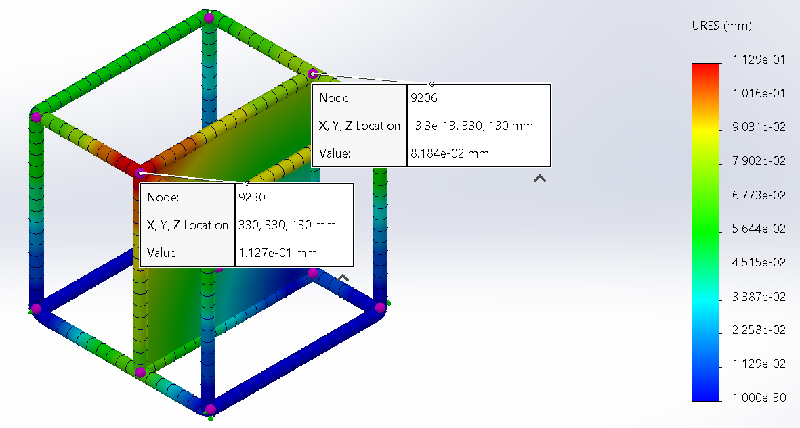 | 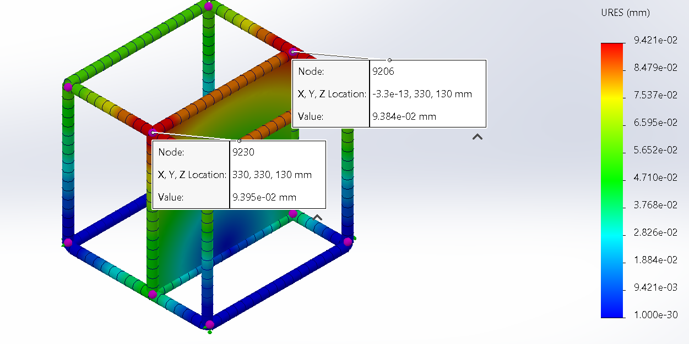 |
| 196.20 | 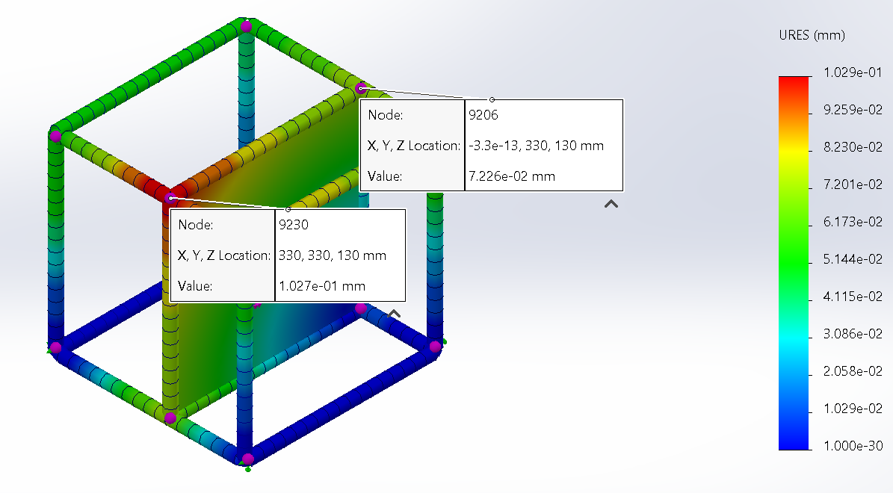 | 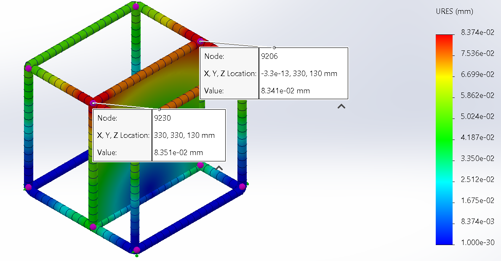 |
| 147.15 | 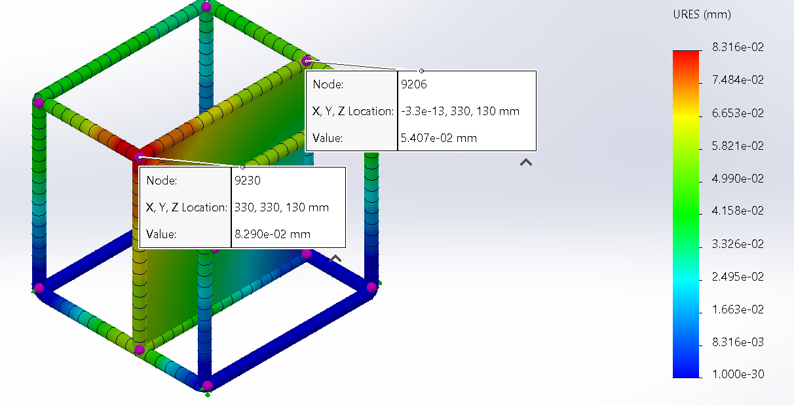 | |
| 98.10 | 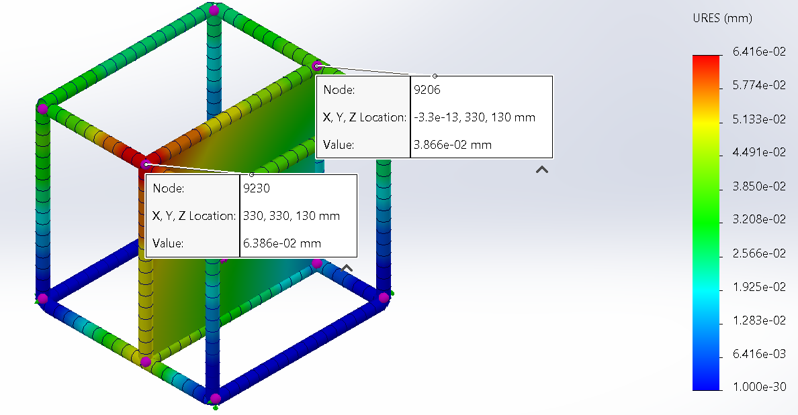 | 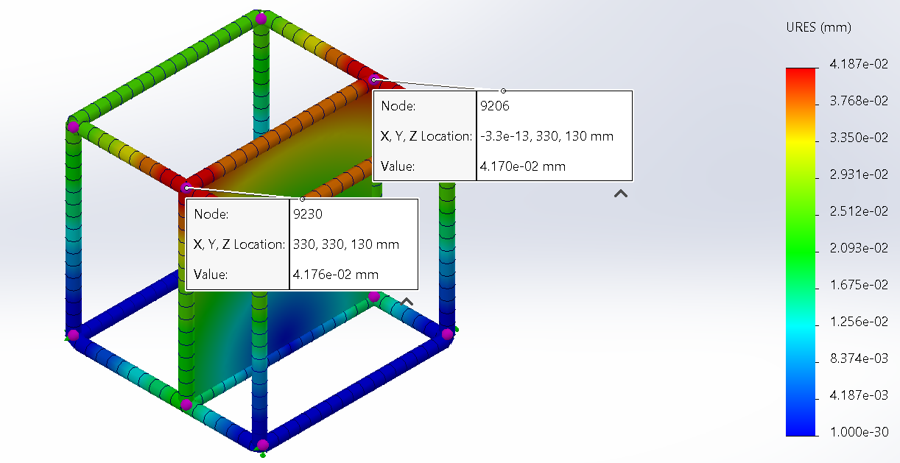 |
| 49.05 | 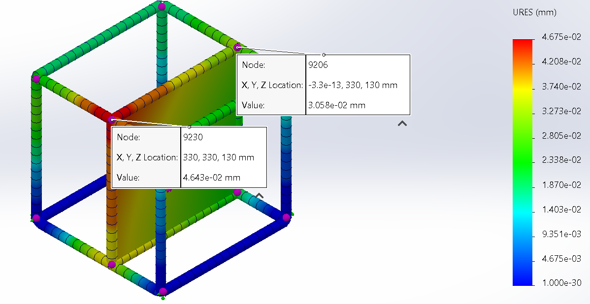 | 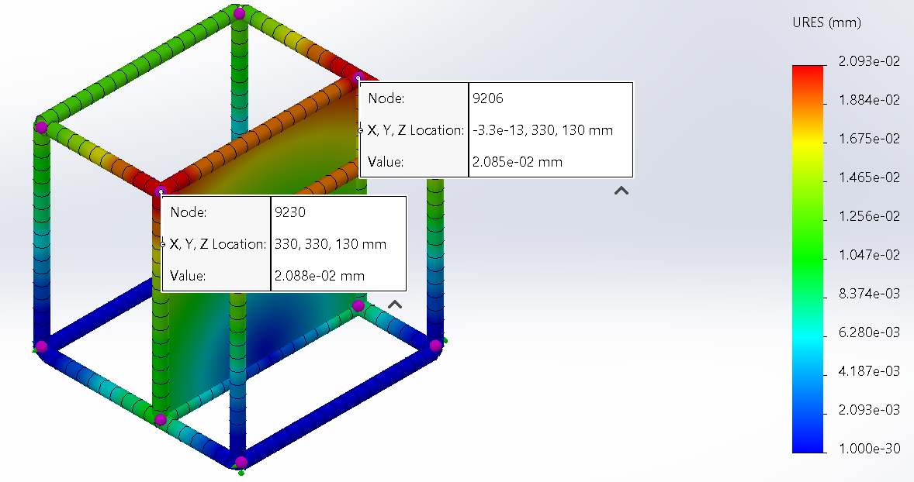 |
| 0 | 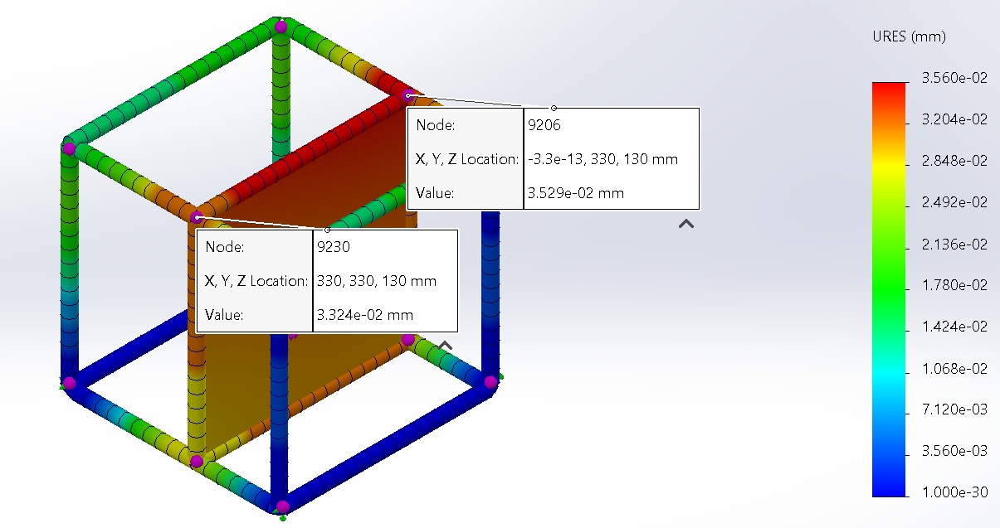 | NA |
| Modal Amplitude | Simulation Results |
|---|---|
| 1 | 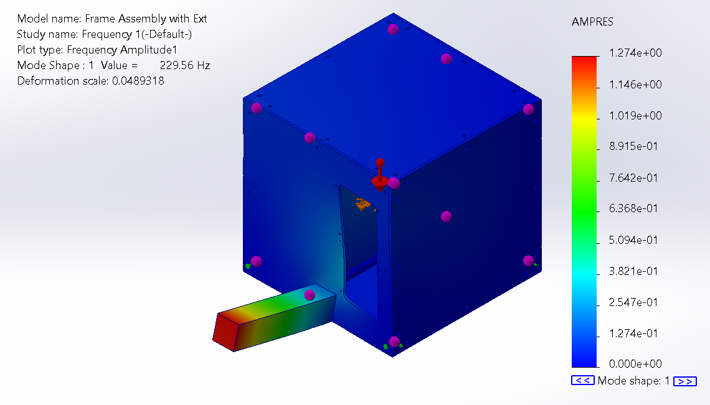 |
| 2 | 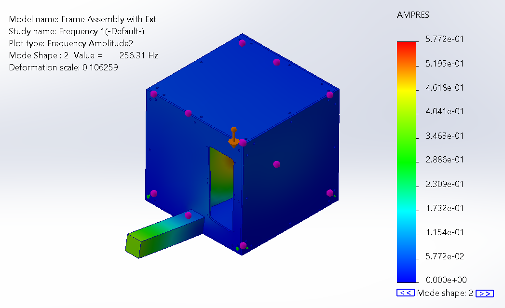 |
| 3 | 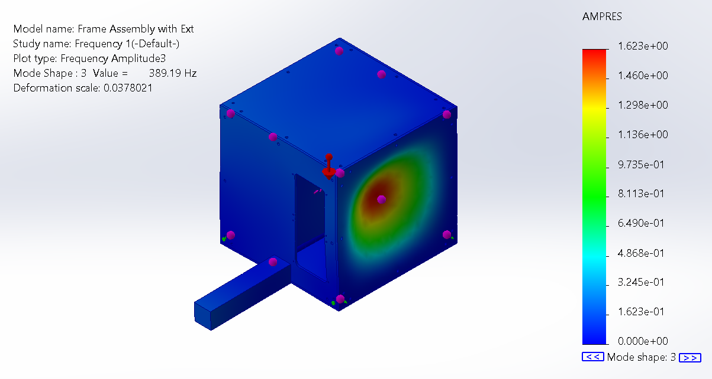 |
| 4 | 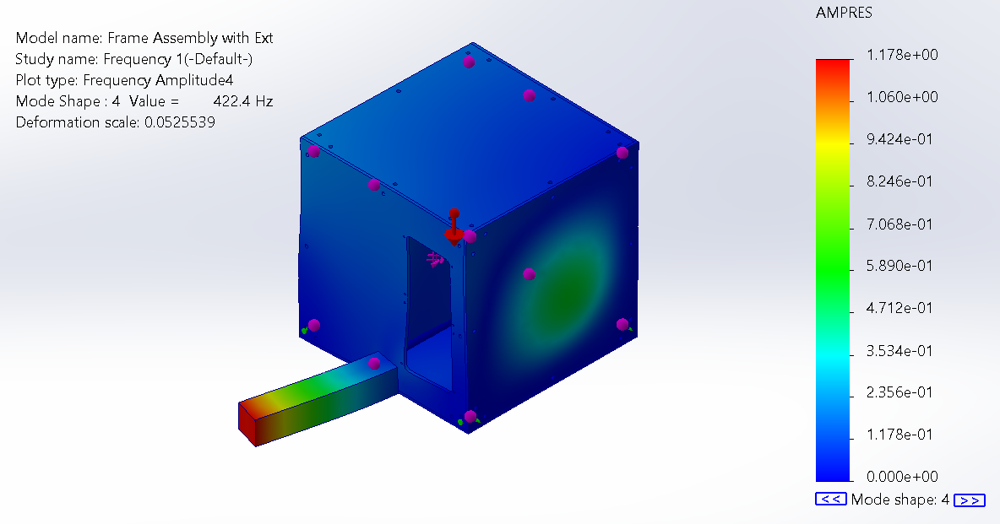 |
| 5 | 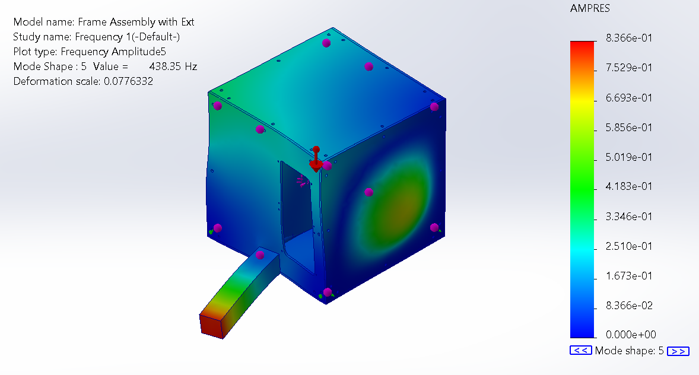 |